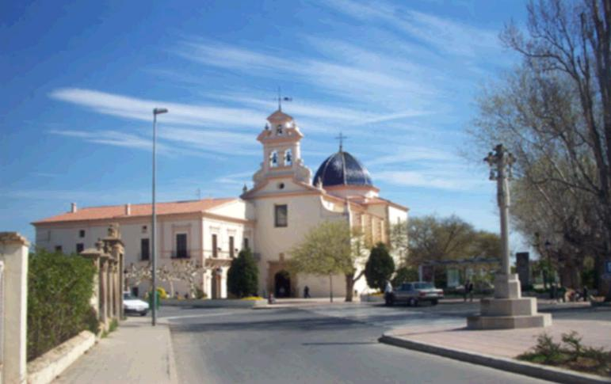
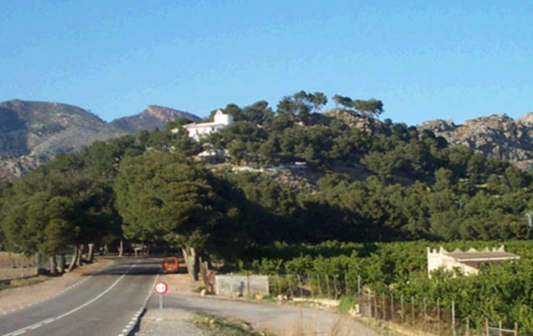

Fondos

13.jpg
Ubicado en Basílica de la Virgen del Lledó (Av. de la Mare de Déu del Lledó, s/n, 12003 Castellón de la Plana, Castellón, España)

14.jpg
Ubicado en Ermitorio de la Magdalena (Cam. Viejo de Barcelona, 12004 Castellón de la Plana, Castellón, España)
El fondo puede ser encontrado en la miniatura de un video de YouTube, y también en esta página de noticias.
Página 7 de 31